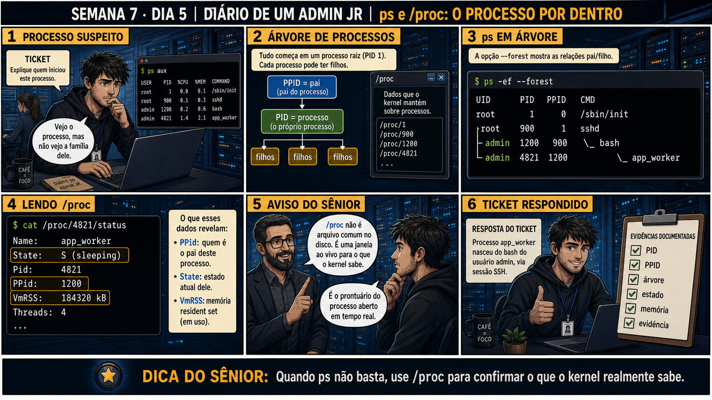

DIARIO DE UM ADMIN JR. | FASE 1 — LINUX, DO BÁSICO AO AVANÇADO
🔗 Conecta com a semana inteira: kill, nice/renice, nohup/disown e tmux te
ensinaram a controlar processos. Hoje fecha a Semana 7 indo mais fundo: entender de verdade o que um processo
É, sua árvore genealógica, e onde o kernel guarda essa informação.
🔓 Privilégio de hoje: investigar a árvore de processos e consultar /proc
diretamente. Você ganha o hábito de usar /proc quando ps sozinho não é suficiente pra entender a relação
entre processos.
Semana 7 · Dia 5 | Nível Júnior
ps Avançado e /proc: O Processo Por Dentro
quando ps não basta, use /proc para confirmar o que o kernel realmente sabe
ANTES DE ALTERAR, OBSERVE. DEPOIS DE ALTERAR, VALIDE.

1. O chamado
Um ticket pede pra explicar "quem iniciou este processo" — um app_worker
suspeito. ps aux comum mostra o processo, mas não a família dele: quem é o pai, e como ele
chegou a existir.
💡 Passa o mouse nas palavras destacadas pra ver uma dica rápida — clica se quiser a explicação completa com analogia.
2. O sênior te conta
Sexta-feira, fechando a Semana 7
A semana toda foi sobre controlar processos — encerrar com o sinal certo, ajustar prioridade sem matar
trabalho, fazer jobs sobreviverem a quedas de sessão, manter sessões interativas persistentes. Hoje fecha
com a pergunta mais fundamental de todas: o que É, de verdade, um processo? De onde ele vem?
Recebi um ticket parecido com o de hoje logo depois de virar pleno. Um processo chamado
app_worker apareceu rodando num servidor, consumindo recursos, e ninguém sabia explicar a
origem dele. O gestor de segurança perguntou, direto: "quem iniciou isso?". Rodei
ps aux, vi o processo na lista — nome, PID, uso de CPU. Mas a lista plana não contava a
história nenhuma. Não dava pra saber se era um serviço automático do sistema, um script de cron, ou
alguém que tinha aberto manualmente via SSH.
Foi aí que um colega mais experiente me mostrou ps -ef --forest. A mesma lista, mas agora
em árvore, com indentação mostrando quem é filho de quem. De repente ficou visível: sshd
(o serviço SSH) tinha um filho bash (a sessão do usuário admin), que por sua vez tinha um
filho app_worker. A cadeia inteira contava a história: alguém logou via SSH como admin, e
de dentro daquela sessão, iniciou o processo manualmente. Não era automação, era ação humana direta —
e agora eu tinha como provar isso com evidência, não suposição.
Quando a árvore não é suficiente, existe uma camada ainda mais profunda: /proc. É um
sistema de arquivos virtual — não existe em disco, é uma janela ao vivo pro que o kernel sabe sobre cada
processo, atualizada em tempo real. cat /proc/PID/status confirma PPID, memória, estado,
exatamente como o kernel enxerga aquele processo naquele instante. Hoje você pratica exatamente essa
investigação: subir a árvore genealógica de um processo até a raiz, e confirmar cada elo com /proc.
3. Decodificador de conceitos
Clica em qualquer termo pra ver a definição completa e uma analogia do dia a dia:
4. Ferramentas e leitura da evidência
Comando
O que observar e por que importa
ps -ef --forest
Mostra a árvore de processos com indentação, revelando pai e filho.
cat /proc/PID/status
Mostra detalhes exatos do kernel sobre um processo: nome, PPID, memória, estado.
5. Laboratório guiado — pegue na mão, comando por comando
Segurança: execute os testes apenas em VM descartável e confirme nomes de discos, hosts e arquivos antes de cada comando.
Ação: veja a árvore completa de processos e identifique um que você mesmo iniciou.
$ ps -ef --forest
Resultado esperado: árvore visível com indentação, mostrando a cadeia até um processo seu (ex.: seu shell, ou algo que você abriu nele).
Por que fizemos isso: ver sua própria árvore de processos é o exemplo mais fácil de entender — você já sabe a resposta certa (foi você que abriu), então pode confirmar visualmente que a árvore está contando a verdade.
Cilada comum: confundir a indentação — cada nível mais fundo (mais \_) é um filho mais recente na cadeia, não o contrário.
Ação: leia o status detalhado desse processo direto do kernel, via /proc.
$ cat /proc/<PID>/status | head -10
Resultado esperado: campos Name, State, Pid, PPid, VmRSS visíveis, compreendidos um a um.
Por que fizemos isso: /proc é a fonte primária, direto do kernel — é o que você consulta quando precisa da verdade mais exata possível, além do que ps já resume.
Cilada comum: tentar abrir /proc/PID/status num editor de texto achando que pode editar — é gerado dinamicamente só pra leitura, editar não faz nada (você vai confirmar isso na Questão 3).
Ação: compare o PPid mostrado no /proc com o que aparece na árvore do ps --forest, confirmando que batem.
Resultado esperado: os dois métodos confirmando exatamente a mesma relação de pai/filho — o PPid do /proc bate com o pai visível na árvore.
Por que fizemos isso: cruzar as duas fontes (árvore visual e leitura direta do kernel) é o mesmo tipo de validação cruzada que você já praticou com pvs/vgs/lvs (Semana 5) — duas fontes concordando é evidência mais forte que uma só.
Cilada comum: confiar só na árvore visual sem cruzar com /proc quando o caso for realmente sensível (investigação de segurança) — a árvore pode ficar confusa com muitos processos, /proc é sempre exato.
🧑🏫 Aqui entra o Mentor (em breve): se uma árvore de processos parecer complexa demais pra interpretar, este é o ponto onde o chat com o Sênior-IA vai ajudar a explicar cada nível.
Ação: explore outros arquivos disponíveis dentro de /proc/PID/ sem alterar nada.
$ ls /proc/<PID>/
$ cat /proc/<PID>/cwd 2>/dev/null
$ ls /proc/<PID>/fd
Resultado esperado: familiaridade com a estrutura de /proc além do status — cwd (diretório de trabalho), fd (arquivos abertos), environ (variáveis de ambiente).
Por que fizemos isso: saber que /proc tem muito mais que status é o que te prepara pra investigações mais profundas no futuro — cwd e fd, por exemplo, ajudam a entender o que um processo suspeito está realmente acessando.
Cilada comum: tentar acessar /proc/PID de um processo de outro usuário sem sudo — vários arquivos ali exigem privilégio elevado pra leitura, por conterem informação sensível.
Ação: documente a árvore completa de um processo, fechando a Semana 7.
# anote no seu diário de bordo:
Processo: [nome] (PID [x])
Árvore: init -> sshd -> bash -> [processo]
PPid confirmado via /proc: [ppid]
Origem: humana (via SSH) / automática (systemd/cron)
Resultado esperado: relatório completo reproduzindo o painel 6 da prancha de hoje, fechando o toolkit de controle de processos da semana.
Por que fizemos isso: esse tipo de registro é exatamente o que um ticket de investigação de segurança precisa como evidência — árvore completa, confirmada por duas fontes, com conclusão sobre a origem.
Cilada comum: documentar só o PID e nome do processo, sem a cadeia completa — é justamente a cadeia que prova (ou refuta) a origem suspeita.
6. Antes de ver as opções — tenta responder
🧠 Recall ativo: o que é /proc, e por que ele não é um arquivo "de verdade" no
disco?
/proc é um
sistema de arquivos VIRTUAL — não guarda dados em disco, é uma janela ao vivo pro que o kernel sabe
sobre cada PPID
e processo, atualizada em tempo real conforme o sistema muda.
QUESTÃO 1 de 3
7. Questão comentada — clica numa alternativa
O ticket pede pra explicar a origem completa de um processo suspeito. Qual é a
abordagem correta?
💡 Analogia do Sênior para Fixar: O diretório virtual '/proc' é a janela de vidro para dentro do cérebro do kernel: cada número de pasta (/proc/1234) contém as entranhas e conexões abertas daquele PID em tempo real.
QUESTÃO 2 de 3 — cenário de erro real
7.1 A árvore mostra app_worker filho de bash, que é filho de sshd — o que isso confirma?
Qual é a conclusão correta sobre a origem desse processo?
💡 Analogia do Sênior para Fixar: O arquivo '/proc/PID/cmdline' é a certidão de nascimento do processo: mostra a linha de comando exata com todos os parâmetros usados no momento do lançamento.
QUESTÃO 3 de 3 — detalhe que confunde todo iniciante
7.2 "/proc/PID/status é um arquivo de configuração que posso editar pra mudar o processo?"
Um colega tenta editar /proc/4821/status com um editor de texto, achando que pode alterar
as propriedades do processo dessa forma.
Essa abordagem funciona?
💡 Analogia do Sênior para Fixar: O comando 'ps aux' varre o /proc e organiza em tabela: exibe o consumo de memória (RSS), usuário dono e tempo acumulado de CPU de cada processo ativo.
8. Procedimento profissional
Use ps -ef --forest pra ver a árvore completa de pai e filho.
Complemente com cat /proc/PID/status pra detalhes exatos do kernel.
Rastreie a cadeia completa até a origem (login, serviço, script).
Distinga origem humana (via shell/SSH) de origem automática (systemd, cron).
Documente a árvore completa como evidência no ticket.
Prevenção
Para processos críticos de produção, documente antecipadamente qual é a árvore
"esperada" (via systemd, cron, ou serviço conhecido). Isso torna qualquer processo fora desse padrão
imediatamente identificável como anômalo, sem precisar investigar do zero cada vez.
9. Validação e encerramento
A árvore de processos foi consultada com ps --forest, não só uma lista plana.
/proc foi usado pra confirmar detalhes exatos do kernel.
A origem completa (humana ou automática) foi corretamente identificada.
Nenhuma tentativa de "editar" /proc foi feita, entendendo que é só leitura.
Rollback e limites
ps e /proc são somente leitura pra fins de investigação — não existe rollback.
O limite real é não confundir /proc com um arquivo de configuração editável, o que não funciona e pode
confundir a investigação.
💡 Sobre repetição espaçada: "quando a ferramenta padrão não basta, vá mais
fundo" fecha a Semana 7 conectando com dmesg (Semana 3) — sempre existe uma camada mais profunda pra
consultar quando a superficial não explica tudo. O Anki vai conectar os dois.
10. Resposta final
Alternativa correta: B. Nesta aula, a decisão correta foi usar
ps -ef --forest pra ver a árvore, e cat /proc/PID/status pros detalhes exatos. O ponto central do
caso é este: quando ps não basta, use /proc para confirmar o que o kernel realmente sabe.
🔓 O que você desbloqueou hoje
Toolkit completo de controle de processos — sinais, prioridade, background
persistente, e inspeção profunda — fechando a Semana 7. Semana 8 abre um novo bloco: ferramentas de texto
que vão alimentar a automação em bash que começa na Semana 9.